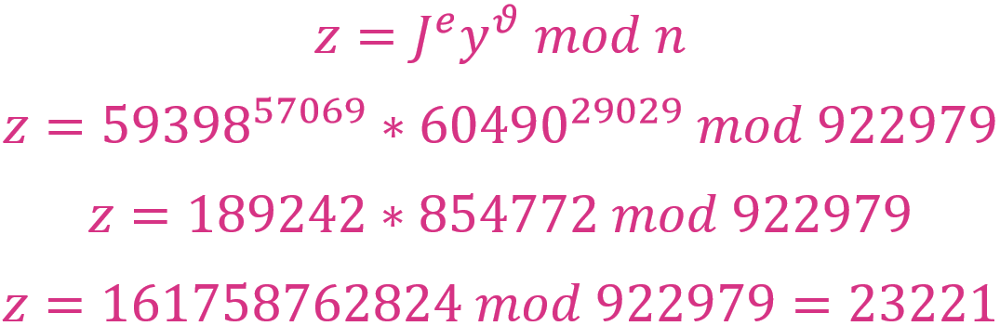

Zero Knowledge Proof Protocol
Problem summary
- Assuming Alice wants to prove her identity
J = 59398to the bank officer Bob. The identityJ = 59398could be an identifier that XYZ Bank issued to her when she opened an account. - Alice is unable to show her other identity proofs such as driver license or birth certificate.
- The XYZ Bank is the trusted third party (TTP) who uses Guillou-Quisquater Identification Scheme as the ZKP protocol
- * All random numbers in this solution are selected using Google Random Number Generator.

XYZ Bank (TTP) must prepare:
- A calculator that is capable of fast calculating modulus with large numbers.
- A secured system to store the prime numbers for each ZKP process (Alice's case is one among many processes).
- A secured communication method/protocol to transfer the modulo and keys to Alice and Bob.
- For each ZKP process, the following prime numbers and modulo are required, taking Alice's case as an example:
Two random prime numbers: p = 751; q = 1229;
Compute: n = p * q = 751 * 1229 = 922.979;
Compute: ∅ = (p - 1) * (q - 1) = 750 * 1228 = 921.000;
Select: ϑ = 29029; by GCD(ϑ; ∅) = 1 and ϑ ≥ 3 (¹)
Compute:
Using Alice's identity J = 59398, compute: sA
- The bank now saves all the above values
p,q,n,∅,ϑ,s,sAto their system. - Then the bank informs the officer Bob (the verifier) and Alice the values of (
ϑ;n) =(29029; 922979). - Also, the bank sends
sA = 382792to Alice.
(¹) To correctly select
ϑ, the following approach can be applied:
- Factor
∅: 1, 2, 3, 4, 5, 6, 8, 10, 12, 15, 20, 24, 25, 30, 40, 50, 60, 75, 100, 120, 125, 150, 200, 250, 300, 307, 375, 500, 600, 614, 750, 921, 1000, 1228, 1500, 1535, 1842, 2456, 3000, 3070, 3684, 4605, 6140, 7368, 7675, 9210, 12280, 15350, 18420, 23025, 30700, 36840, 38375, 46050, 61400, 76750, 92100, 115125, 153500, 184200, 230250, 307000, 460500, 921000. - Select prime numbers not in the factors list and multiply:
29029 = 7 * 11 * 13 * 29
Bank officer Bob verifies Alice:
- Alice choose a random integer number:
r = 82935; - Alice knowing (
ϑ;n) calculates: - Alice now sends (
J;x) =(59398; 232221) to bank officer Bob. - Bank officer Bob sends back Alice a random integer number:
e = 57069; - Alice knowing
sA = 382792calculatesyas follow:
- Alice sends
y = 60490to bank officer Bob. - Bank officer Bob having (
J;v;y) calculateszas follow:
 - Since
z = x = 232221, bank officer accepts Alice's proof of her identity.
Trusted Third Party must prepare before the process:
In addition to the above 2 critical requirements, there are a lot more that a TTP must prepare:
- A policy for key revocation when a verification or authentication process has completed, or an event of suspicious activity occurred, or when user require.
- Make the ZKP process traceable by adding timestamps and endpoint of the retriever to the keys and requests.
- Ensure real-time service that user (Bob, Alice) can communicate to validate their messages at any time.
- Support for auditing and monitoring the transfer of data to ensure the keys are only delivered to the correct user.
European Telecommunications Standards Institute (ETSI) 1997. "Telecommunications Security; Trusted Third Parties (TTP); Requirements for TTP Services". ETSI, Valbonne, France. https://www.etsi.org/deliver/etsi_eg/201000_201099/201057/01.01.02_60/eg_201057v010102p.pdf